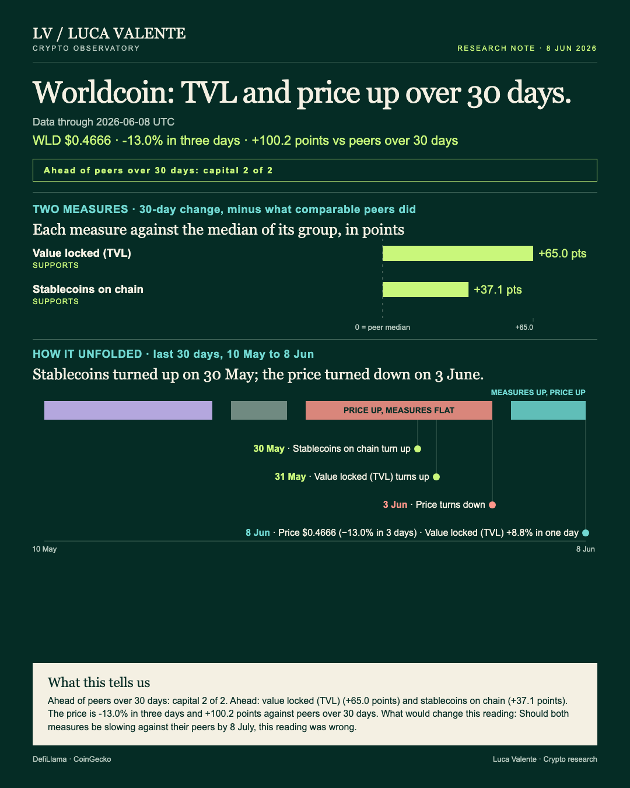
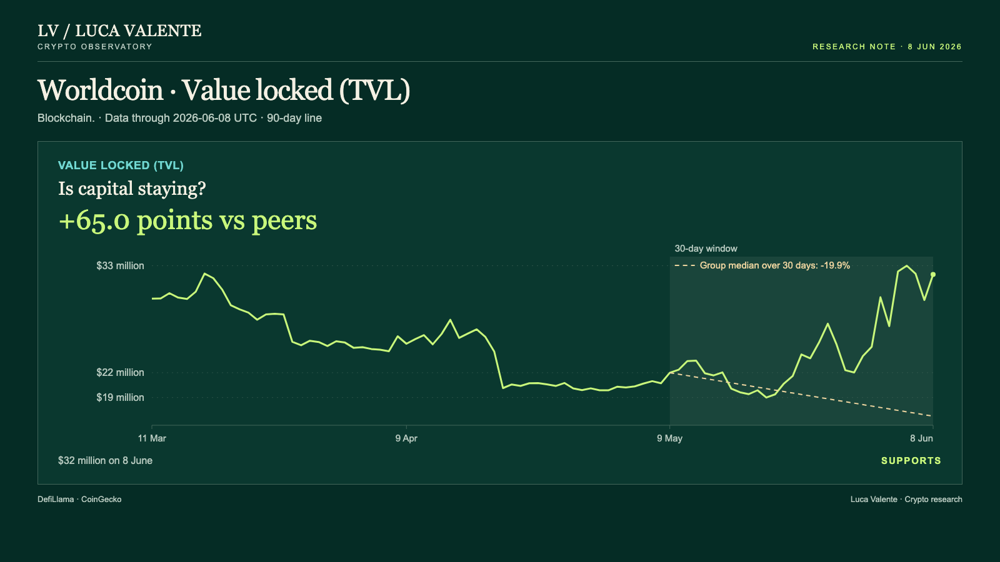
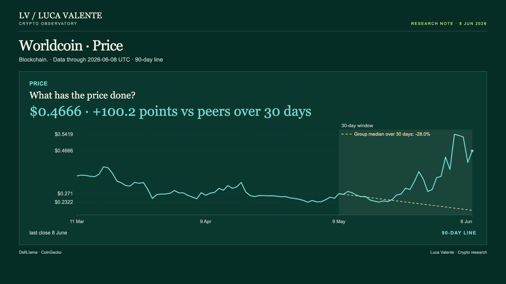

Training note, written on 24 September 2026 from data as of 8 June 2026. Not part of the published series.
Worldcoin's Capital Beat Its Peers. So Did The Price.

Worldcoin's price and the money on its chain both beat their peers over the past month, yet the price is lower than three days ago. For anyone who holds or follows WLD, Worldcoin's token, that leaves one question: how much of this good month is already in the price?
Both capital lines here, stablecoins and value locked, are ahead of their peer group over 30 days. Each is measured against the chains that report it, Worldcoin included. Worldcoin is the blockchain the project runs on; WLD is its token.
First to turn up were stablecoins on the chain, on 30 May. On 8 June they stood at $26 million, up 33.2% over 30 days from $19 million on 9 May, 37.1 points ahead of the group median, -3.9%.
One day later, on 31 May, value locked followed. By 8 June it was at $32 million, up 8.8% in a day and 45.0% over 30 days from $22 million on 9 May. That's 65.0 points ahead of its median, -19.9%. Part of that 45.0% can be price, not new deposits: value locked is counted in dollars, and WLD rose 72.2% over the same 30 days, to $0.4666 from $0.271. Stablecoins carry no such caveat; they read dollars on the chain.

WLD closed at $0.4666 on 8 June, up 12.7% in a day and 72.2% over 30 days from $0.271, 100.2 points ahead of its median, -28.0%. It turned down on 3 June, and fell 13.0% over three days, from $0.5364 on 5 June.

Neither capital number is usage, and users and wallets aren't measured. There's no fee line, no volume or commit count here, and nothing in the data says why either moved. Nothing past 8 June is in this note either.
Worldcoin's own record is the objection. Today's 8.8% jump in value locked is the yardstick: 25 of the other 35 chains in today's group have had one this size since September 2025. Seven more are no longer in the group. Worldcoin itself has had five, the latest on 24 May, and only one held up a week later. Five cases (not much of a sample, and I'd say so even if it favored me) is what Worldcoin has to show.
Here's where I'd give this up: Should both measures be slowing against their peers by 8 July, this reading was wrong. The case rests on capital and price climbing together; if both capital lines cool against their peers by then, this support fades.
To the opening question: a good part of it, I think. A token 100.2 points ahead of its group median in 30 days has already priced in a good month.
Sources: DefiLlama (stablecoins, value locked), CoinGecko (price).
Peer group: 36 chains tracked by DefiLlama (who they are). 'Net of the group' is the 30-day change minus the group's median.
Not financial advice. This is a research note based on public on-chain data.